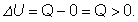

Elemente de termodinamică. |
Principiul I al termodinamicii |
D-4. |
Principiul I al termodinamicii |
Energia internă a unui sistem termodinamic se poate modifica doar prin transfer de energie sub formă de căldură şi/sau
lucru mecanic între sistem şi mediul său (figura 4−1).
|

|
Figura 4-1. Modificarea energiei interne a unui sistem termodinamic ca urmare a
transferului de energie între sistem şi mediul său:
a) sistemul este în echilibru cu mediul său (starea iniţială);
|
|
|
b) sistemul interacţionează cu mediul său, schimbând cu acesta energie sub formă de căldură şi/sau
lucru mecanic;
|
|
|
c) sistemul atinge o nouă stare de echilibru cu mediul său (starea finală).
|
 Fiecărei stări de echilibru a unui sistem termodinamic îi asociem
o mărime fizică de stare − energia sa internă.
Fiecărei stări de echilibru a unui sistem termodinamic îi asociem
o mărime fizică de stare − energia sa internă.
Una dintre cele mai fertile idei din fizică este cea care afirmă că energia provine doar din energie. Cu alte cuvinte,
energia se conservă. Oriunde apare un surplus de energie, în altă parte apare un deficit de energie, tot atât de
mare.
Formularea principiului conservării energiei pentru procesele termodinamice constituie:
Prinicipiul I al termodinamicii:Variaţia energiei interne
a unui sistem este suma algebrică a căldurii şi lucrului mecanic transferate între sistem şi mediul său:
Semnul minus din expresia principiului I al termodinamicii se datorează convenţiei de semne pe care o folosim. Când sistemul
primeşte căldură (Q>0), dar nu şi lucru mecanic (L=0), energia lui internă creşte (figura 4−2):


|
Fig. 4−2. Energia internă a sistemului creşte pe seama cantităţii de căldură primită.
|
Când sistemul primeşte lucru mecanic (L<0), dar nu şi căldură (Q=0), energia sa internă creşte (figura 4−3):

|
|
Fig. 4−3. Energia internă a sistemului creşte pe seama lucrului mecanic efectuat
asupra sistemului.
|
Tot astfel, energia internă a sistemului se micşorează (ΔU<0) dacă sistemul transferă mediului său energie
sub formă de căldură sau lucru mecanic.
 Provocarea 4-1
Provocarea 4-1
Cât este variaţia energiei interne a unui sistem termodinamic care este supus unui proces în urma căruia revine la
starea iniţială (proces ciclic)?
Dacă stările iniţială şi finală coincid, variaţia energiei interne este nulă (aceeaşi energie internă caracterizează
atât starea iniţială cât şi cea finală a sistemului). Conform principiului I al termodinamicii, dacă ΔU=0,
rezultă Q=L.
Dacă sistemul, pornind din aceeaşi stare iniţială, parcurge un alt proces ciclic, cu o variaţie mai amplă a parametrilor
(presiune, temperatură etc.), variaţia de energie internă este nulă şi în acest caz:
De data aceasta, Q'≠Q şi L'≠L (au fost atinse temperaturi şi presiuni diferite pe parcursul
celor două procese).
Energia internă a unui sistem este o mărime de stare (variaţia energiei interne depinde doar de stările iniţială şi
finală ale sistemului), dar cantitatea de căldură şi lucrul mecanic transferate între sistem şi mediul său sunt
mărimi de proces (depind de procesul la care participă sistemul).